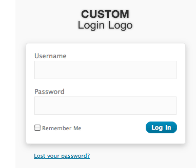

Created: 11/12/2010
By: Luke McDonald (CELTIC7)
Themes on ThemeGarden
Follow on Twitter
Find on Facebook
Thank you for purchasing my theme. By supporting this theme, you have contributed to creating a healthier planet through my 1% For The Planet membership. If you have any questions that are beyond the scope of this help file, please feel free to contact me via my profile page on ThemeGarden.com here. Thanks so much!
The theme can be uploaded in two ways:
Once the theme is uploaded, you need to activate it. Go to Appearance > Themes and activate Slickmapper theme.
The theme needs to know how many columns (top level navigation items) there will be. After installing, visit the Layout options by going to Appearance > Theme Options > Layout (tab) and select a number from the dropdown. Any changes in the number of top level nav items will need to be updated here for the SlickMap CSS to function properly.
If you use version 3.0+ of WordPress, you can setup custom menus to use with our theme. Slickmapper comes with two custom menu locations.
If using custom menus, Slickmapper will use the first menu item as the "Home" element, which is required when using SlickMap CSS. With the use of jQuery, the first item will be given the appropriate class name.
Should you be running earlier versions of WordPress, Slickmapper degrades gracefully and automatically creates all sets of navigation for you. Custom menus are replaced with a list of pages for the primary navigation and a login/out link for the utility navigation. In this case, you will have options to alter the display of these menus from the Slickmapper theme options.
Go to Appearance > Menus. Give your menu a name and build it up using little widgets on the right. You can add pages, categories or custom URLs.
Now simply select the theme location for your newly created menus using a widget on the left. Under Utility Menu, select your menu from the drop-down list, to use it as the site's utility navigation. The Primary Menu can be used to populate the main navigation.
You can populate all or none of the menu options. To use the built in navigations, simply select the empty value from the menu drop-down choices.
Slickmapper comes with a simple to use administration panel. You can access it by navigating to Appearance > Theme Options. The theme options are conveniently spread over a number of accordion tabs. Each tab contains the options that pertain to a particular area of the theme.
 Example showing the custom login logo implemented.
The theme styles options allow you to change the basic color structure of the navigational elements. For both the Utility and Primary navigations, options to set the background and border colors along with the hover state colors for each as well.
For each color selection, click in the input box to select a color, enter a color by hexadecimal value, or a color name (e.g. green, purple, aqua). A color picker will display allowing you to select a color. After a color option has been achieved in the color picker, click on the small circular color wheel icon in the lower right corner of the color picker to set it's value. Click outside of the color picker to exit color picker. After updating your page, a colored circle with your chosen color should appear in the input.
The menu options are automatically pulled into the theme. You can however use WordPress's built in menu options to customize the default menus for this theme.
Choose how many columns will be displayed. This needs to be the same number as the number of top level navigation items there are.
By default the web URLs are shown, however you can hide them by checking the box below.
The flush() function in WordPress can help speed up your website dramatically. Important: This has been known to not play nice with W3 Total Cache plugin
flush() function after the head tagEnter your Analytics code in the textarea provided to enable by placing it in the footer (e.g. Google Analytics).
The Slickmapper theme supports the use of Post Thumbnails. Note: you must have WordPress version 2.9 or later to use this feature. The theme supports auto-resizing of the post thumbnails and so there is only the requirement to specify a single image. However, auto-resizing will only occur when the image is uploaded for the first time, images that have previously been uploaded will not be resized.
To ensure the correct display of images across your site, ensure you specify an image with dimensions of 560 x 300 or larger.
To upload a post thumbnail, go to Posts/Page -> Add New or open an existing post in editing mode. Locate the Featured Image module and click the Set featured image link. If you are using WordPress 2.9 it will refer to it as a Post Thumbnail.
Clicking the link will open up the usual WordPress image uploader where you will upload the image as usual. Simply make sure that it is either the same size or larger than what the final thumbnail will be. Once you’re done uploading the image, simply click the link that says “Set Featured Image”, which is next to the button to insert it into the post.
Once you’re done, a preview of the image should appear in the right-hand box and you are free to insert the image into the post as with any other image.
For more on how to use the WP2.9+ Post Thumbnail feature you can view this article - http://en.support.wordpress.com/featured-images/
This theme imports various Javascript files.
html element which allow you to target specific browser functionality in your stylesheet. You don't actually need to write any Javascript to use it.I've included all PNG images with this theme. If you use Adobe Fireworks, you can open these images and edit the layers. If not, I suggest getting Adobe Fireworks, it's wonderful.
All PNG's contain styling for necessary elements.
I've used the following images, icons or other files as listed.
Once again, thank you so much for purchasing this theme. As I said at the beginning, I'd be glad to help you if you have any questions relating to this theme. No guarantees, but I'll do my best to assist. If you have a more general question relating to the themes on ThemeGarden, you might consider visiting the ThemeGarden.com and asking your question via the Contact Page.
Luke